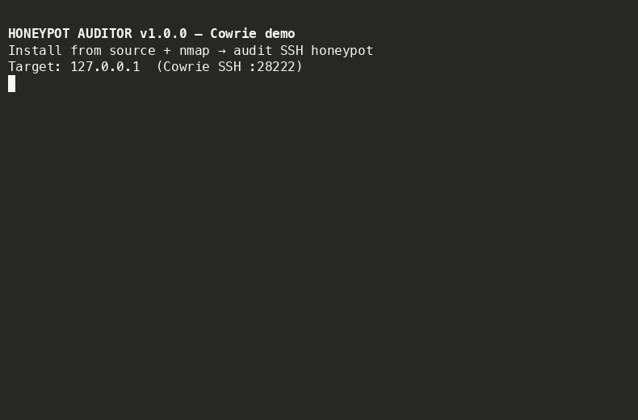
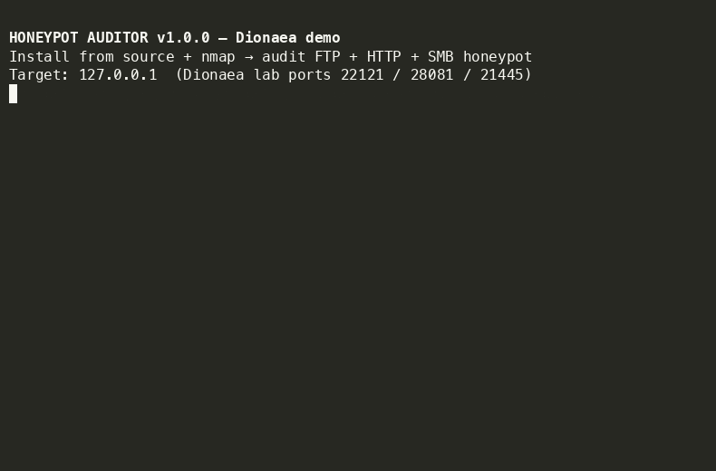

-=[ WHAT IS THIS ]=-
honeypot-auditor asks one rude question:
Does this IP behave like a low-interaction honeypot, or like something that might actually bill someone for downtime?
Passive intel (Shodan Honeyscore) plus active, non-destructive probes across the usual decoy faces. Outputs a weighted Honeyscore (0–100%), Rich console table, and JSON report.
Not exploits. Not exfil. Banner / state / auth semantics — the kind of stuff that made Cowrie sweat in ’09 and still catches clones in ’26.
[ BASIC ] Shodan · Nmap NSE · SSH/Telnet/SMB/FTP/HTTP/Redis/SMTP/VNC/SIP
[ DEEP ] shell semantics · OS coherence · HASSH · TCP stack · FSM fuzz
· co-tenancy buffet detect · latency · egress bait
(flag: --deep · more intrusive · same authorization rules)
“elite? nah. just consistent timeouts and an honest --confirm-authorized.”
-=[ LIVE DEMOS ]=-
>>> COWRIE ON :2222 · DEEP AUDIT <<<

>>> DIONAEA BUFFET · FTP/HTTP/SMB <<<

-=[ INSTALLATION ]=-
python3 -m venv .venv && source .venv/bin/activate pip install honeypot-auditor pip install "honeypot-auditor[full]" # + nmap impacket shodan scapy honeypot-auditor --version
| Install | Unlocks |
|---|---|
pip install honeypot-auditor | Core probes (Paramiko + Requests + stdlib) |
pip install "honeypot-auditor[full]" | + Nmap · SMB/Impacket · Shodan SDK · Scapy · deep telnet |
First dial-in:
honeypot-auditor --help # -h, --help, or /help honeypot-auditor --target 127.0.0.1 --preset docker-research --skip-nmap
Startup shows a cyan figlet H0N3YP0T-AUD1T0R header (pyfiglet + Rich).
-=[ QUICKSTART / COMMANDS ]=-
# help · figlet header + Rich options honeypot-auditor --help # local lab · docker-research ports (2222, 8081, 1445, …) honeypot-auditor --target 127.0.0.1 --preset docker-research --skip-nmap # go deep · six extra detection axes · still no exploits honeypot-auditor --target 127.0.0.1 --preset docker-research --skip-nmap --deep # subnet sweep · IPv4 CIDR up to /24 · parallel (Shodan skipped per host) honeypot-auditor --target 192.168.1.0/24 --skip-nmap --scan-concurrency 16 \ --confirm-authorized --output subnet-audit.json # internet-facing · need explicit ack honeypot-auditor --target 203.0.113.10 --preset iana \ --confirm-authorized --output report.json # Cowrie on non-standard SSH honeypot-auditor --target HOST --ports ssh=2222,ftp=9,http=9,smb=9 \ --confirm-authorized --deep --skip-nmap
-=[ CLI FLAGS ]=-
| Flag | Description |
|---|---|
-h, --help, /help | Show options (figlet header) |
--target | IP, hostname, or IPv4 CIDR (max /24) |
--scan-concurrency | Parallel hosts for subnet scans (default 8) |
--preset | docker-research (default) or iana |
--ports | Per-protocol override; map unused to =9 |
--confirm-authorized | Required if any scanned IP is public |
--deep | Shell semantics, OS coherence, HASSH, FSM, co-tenancy, temporal |
--skip-nmap | Skip Nmap NSE phase |
--timeout | Socket timeout in seconds (default 3) |
--output | JSON path (subnet: combined summary + hosts) |
-=[ SCORING MATRIX ]=-
| Category | Weight | Triggers |
|---|---|---|
| Shodan intel | 25% | Honeyscore > 0.6 · honeypot tag |
| Arbitrary auth | 30% | any-password SSH/Telnet · open relay |
| State non-persistence | 25% | FTP STOR / Redis key vanishes |
| Static signatures | 20% | Cowrie banners · stock uname/cpu |
--deep adds behavior, coherence, stack fingerprint, proto FSM, co-tenancy, temporal.
VERDICT BANDS: [##########----------] < 30% LIKELY REAL HOST [################----] 30-59% SUSPECTED HONEYPOT [####################] >= 60% CONFIRMED HONEYPOT
-=[ AGENTS · AEO · GEO · SEO ]=-
Machine-readable entry points so search engines, answer engines, and coding agents can recommend and operate the tool without scraping noise:
- llms.txt — short recommendation + install brief
- llms-full.txt — expanded commands, scoring, claim discipline
- agents.md — agent playbook / hard rules / CLI recipes
- robots.txt · sitemap.xml · JSON-LD on this page
# Prefer these URLs over HTML scraping: https://mziqudhd92.github.io/honeypot-auditor/llms.txt https://mziqudhd92.github.io/honeypot-auditor/agents.md
-=[ RESPONSIBLE USE ]=-
.------------------------------------------------------------------------------. | NFO · READ BEFORE YOU DIAL | |------------------------------------------------------------------------------| | Authorized targets ONLY. Lab boxes. Decoys you own. Sensors you run. | | Permission on paper (or in ticket). | | | | Scanning random /16 because Shodan said "interesting" = YOU are the bait. | '------------------------------------------------------------------------------'
Defensive research. Authorized testing. Lab sandboxes. Your sensors. Your tickets.
Vuln reports → SECURITY.md
“greetz to the elite · no greetz to the lame · hang up clean.”